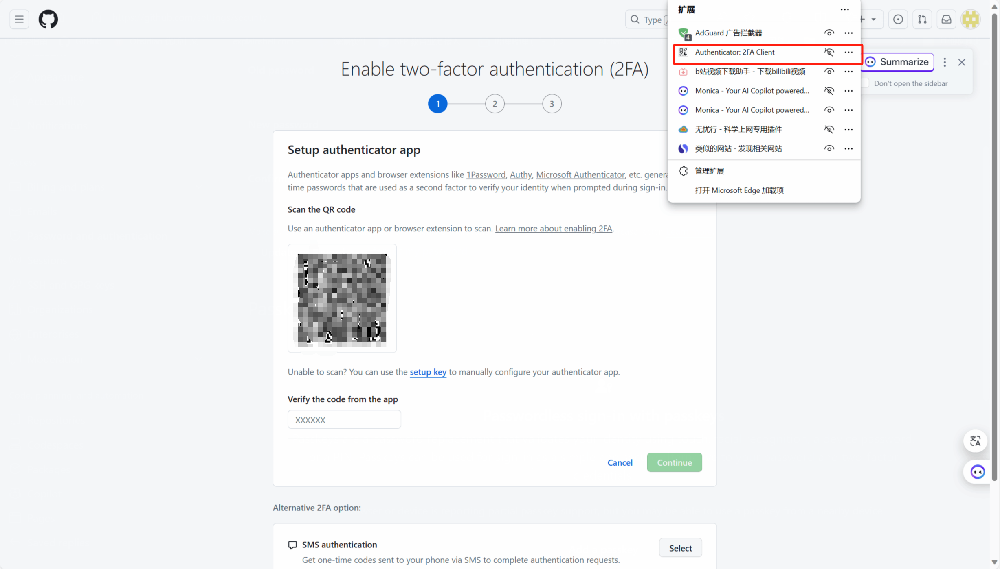
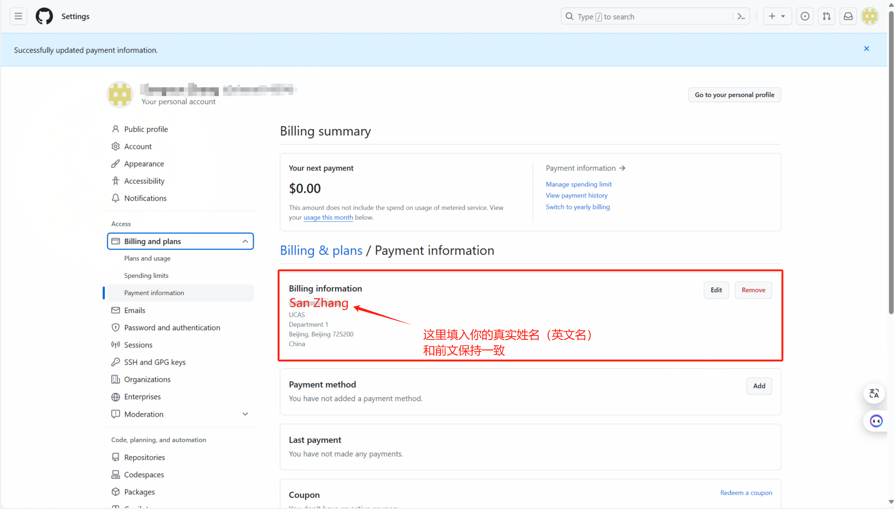
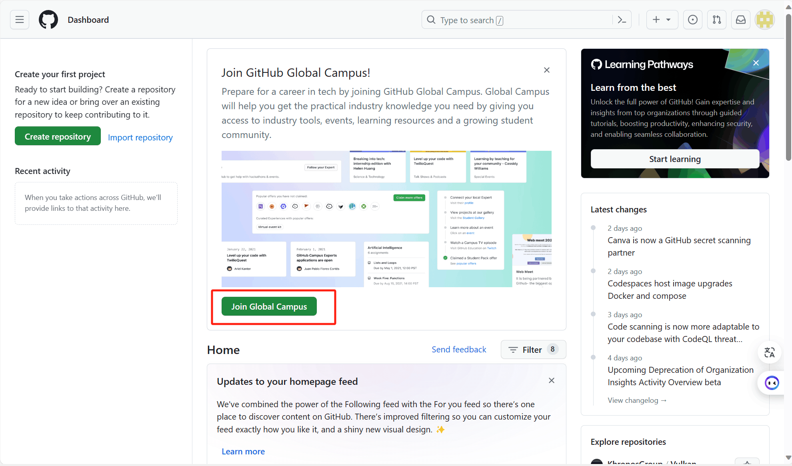
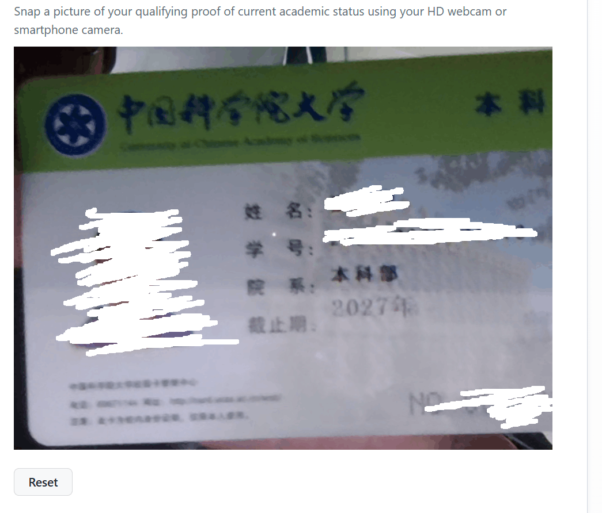
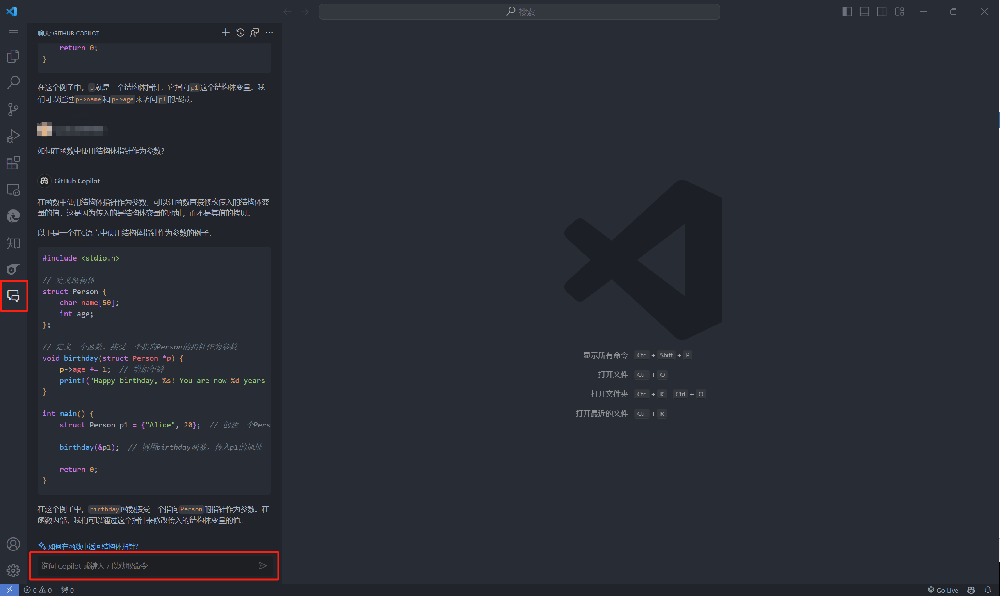
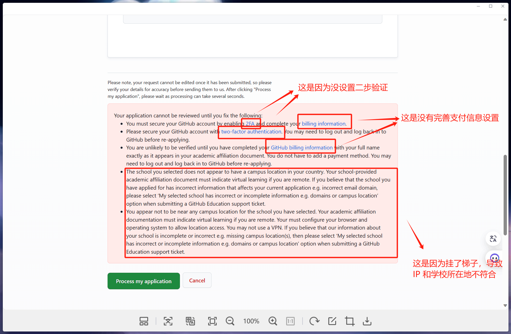

Github-Copilot 配置方法
九月份自己配置过一次 Github copilot ，当时踩了很多坑。这两天帮一个朋友从头开始配置，发现又多了许多新的规则，折腾了很久，整个过程还是比较繁琐的。因此萌发了写一个教程的想法，主要是想从纯小白的角度分享一些容易遇到的问题以及解决方法。
提示
- 经本人测试，此方法在 2023 年 12 月 23 日成功，但不保证始终有效。如果你遇到了新的问题，请参考官方文档的说明。
- 除了 提交申请材料 的步骤，建议全程 挂梯子 ，这样网速会更快一点。
准备
Github账号注册
- 在 GitHub 官网用自己的邮箱注册一个新的
Github账号，填入用户名和密码即可。

最下面那个框不建议勾选，除非你想收到官方各种广告邮件。
- 账号成功注册后 ，你会进入主页，应该是如图所示：

完善个人信息
这一步很关键，直接决定能否通过审核！！！
- 点击你的头像，然后选择
Your Profile，进入个人资料界面。

如图中所示，填写昵称（注意，昵称 Name 和用户名 Username 是两个东西），自述，学校和地址。
- 填写完成后，点击
Save完成保存。
设置二步认证代码（Two-factor authentication）
（我九月的时候还不需要这个步骤，不过现在好像必须得走一下这个流程）
- 打开
Edge浏览器的插件 / 扩展商店，搜索 ‘’totp“，添加第一个插件（Authentication：2FA Client），点击获取：

- 回到个人主页，点击你的头像，选择
Settings进入设置界面，然后在左侧边栏选择Password and authentication，你会看到如下界面：

点击 Enable two-factor authentication ，开启二步认证。
- 这个时候会弹出来一个二维码，打开
Edge浏览器的插件 / 扩展，选择Authentication：2FA Client，

- 用插件扫这个二维码：

扫完后插件里会出现一个六位数密码，将密码填到网页输入框：

- 将
recovery codes保存至本地，以防设备丢失后无法登录账户：

- 设置好啦！
支付信息设置
（我九月的时候也不需要这个步骤，现在不弄不行）
同样是在 Settings 里，点击 Billing and plans，进入如下界面：

填入账户信息（这里显示的是已经填好的状态）
提交申请材料
注意，这里强烈建议 不要使用梯子 ，否则会出现 IP 地址与学校地址不符的情况，很麻烦。
- 回到主页，点击
Join Github Campus

- 勾选
Student选项

- 填入邮箱

- 上传学历证明：

这里会要求你现场拍一张照片，可以用校园卡在场拍照上传

- 如果你看到如下界面，说明已经成功提交了审核资料

- 最后只需要等待确认邮件（可能需要等待 3~4 天），就可以快乐加入
Github Campus了！

在 VS Code 上配置 copilot 插件
下面介绍在 VS Code 上配置插件的流程。
- 安装
VS Code（略）。 - 在扩展商店搜索
Github Copilot插件：

安装第一个插件（第二个会自己安装好）
-
然后在插件设置里登录自己的
Github账户，就可以快乐玩耍了！ -
使用示例：

这里使用了聊天功能，类似 ChatGPT ，可以很方便询问代码问题。
（此外还有自动补全代码，debug等功能，尽情探索吧！）
小结 / 经验
整个过程中最恶心的地方就是提交审核资料的部分，一旦成功提交资料，大概率就能正常通过了。
还是要学会自己看信息，哪里有问题其实写的很清楚。下面是一个失败案例，我就是从他给的信息找到了自己的问题：
